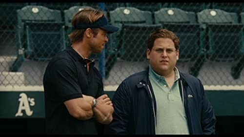

Team Leading
The art of being expendable

Matteo Di Paolantonio
22/11/2021
Agenda
- The teamlead himself / herself
- The teammates
- The project
- The client
THE TEAMLEAD
“
Listen to me, Marvin, I'm a c...
...listen to me, Marvin Nash, I'm a cop.
”
The goal
- Being expendable
- Cohesive and autonomous team
- Having the team spinning forever
A jack of all trades
“
master of none though oftentimes better than master of one
”
- Tech lead
- Architect
- DevOps
- Project manager
- Product owner
- Senior dev
- Mentor
- ...
The unblocker
- Issues
- Doubts
- Fires
- Requirements
- Risks
- Meetings
- Chats
- Pairings
- Deadlines
- ...
clean and tidy house
Calendar and cerimonies

clean and tidy house
Wiki
clean and tidy house
Interfaces and APIs

clean and tidy house
Architecture diagram

clean and tidy house
Boards and tickets

delegating and guarding
“
Concealed within his fortress, the lord of Mordor sees all.
”
team shape matters
Scenarios
- One senior plus
- No seniors and one medior plus
- One team lead (not you)
actions and words matter
- Be an example
- Assertive, transparent and backed by facts communication
To bear in mind
“
I hate losing more than I even wanna win.
”

Thank you